Individual-based modelling of a population of trees
The main aim of this tutorial is to introduce you to individual-based modelling.
System Dynamics (or “compartment-flow”) modelling generally does not represent individuals in a population. Instead, all the individuals are lumped together and represented by a single value: the number of individuals in a population, the total weight of all the individuals, or the total amount of some substance they contain (water, carbon or nitrogen, for example).
However, there are many situations when it is important to represent each individual in the population separately. For example, the behaviour of the whole population may be partly a product of interactions between individuals, or between individuals and their environment.
In this tutorial, we will look at how to model a population in terms of a set of individuals — in this case, trees. We will not consider how to handle interactions. However, we will see how to specify a set of individuals, how to give them individual behaviour (growth), and how to represent the creation of new trees and the death of existing ones.
It assumes you have done Tutorial 1, Bank account, and know how to add stocks, flows, variables and influences, open an element's properties dialog, and run a model.
Stage 1: Modelling the growth of a single tree
Start with File › New model, then File › Rename model… and call it Trees.
Step 1
Add a stock to the diagram, and name it size. Leave plenty of room above it: by the end of the tutorial, several more things go there.
Step 2
Draw a flow into the size stock, from empty space on its left, and name it growth.
Step 3
Add a variable above the growth flow, and name it gr.
The variable gr represents the maximum rate of growth of the tree.
Step 4
Draw an influence arrow from both the size stock and gr to the growth flow (its valve).
Your model diagram should now look like this:
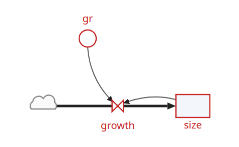
Step 5
Enter the following expression for the growth flow: gr*(1-size/25)
In this expression, the value 25 is the maximum size the tree will reach. Its growth rate will fall from the maximum given by gr at the start of the simulation. This form of mathematical expression is a convenient way of achieving the behaviour we want: rapid initial growth, slowing as the final maximum size is approached.
Step 6
Set the initial value for the size stock to 3.
Step 7
Set the value for the variable gr to 0.2.
Step 8
Prepare the model for running: in the Simulation window, click load.
Step 9
Set up a plotter for the size stock: Widgets › Plotter, choose size, and click add.
Step 10
Run the model with ▶, for the 50 years it offers.
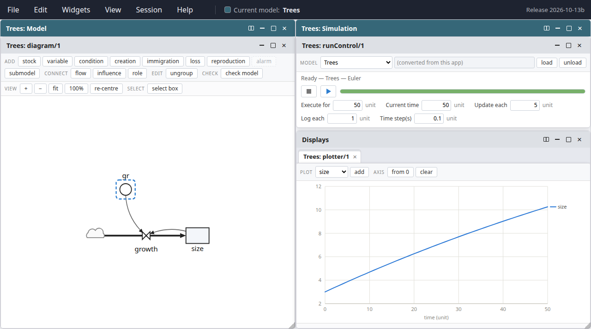
The tree grows from 3 to just over 10 in 50 years, its growth slowing a little as it goes. (To see the model and the results side by side, as here, choose View › Arrange windows › This model beside its simulation.)
Stage 2: Extending the model to represent a population of trees
Step 1
Draw a submodel box to completely enclose your model diagram:
- click the submodel tool on the toolbar;
- move the mouse to empty space at the top left of your model diagram, well above gr;
- drag the mouse (that is, hold down the mouse button and move the mouse) to the bottom right of your model diagram;
- release the mouse button.
Everything inside the box you draw goes into the submodel.
Step 2
Name the submodel tree: as soon as you release the mouse, you are typing its name.
This submodel will represent a population of trees. However, rather than calling it “trees”, it is conventional to name the class of objects after one individual, so here we call it “tree”.
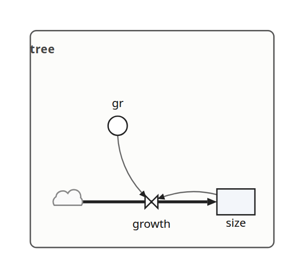
Step 3
Open the submodel's properties dialog: double-click on an empty part of the submodel, inside its box.
Step 4
Set Membership to Population. (Older versions of Simile called this “Using population symbols”.) You may need to scroll the dialog down to see it.
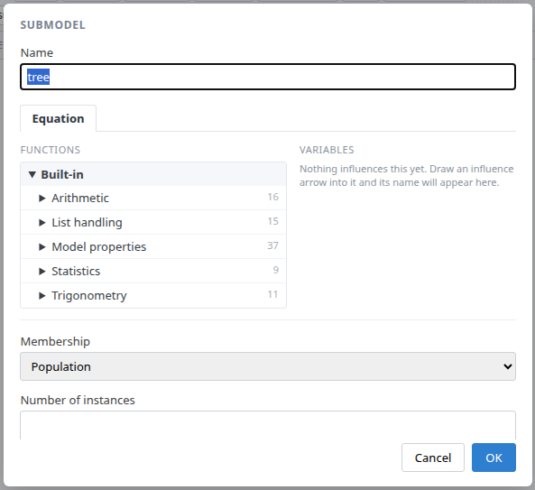
Step 5
Click OK to close the dialog.
Not yet in the web version The original tutorial also chooses a background colour for the submodel here. Submodels cannot be coloured yet.
Note that the submodel boundary now has an extra line along the top-and-left, and another along the bottom-and-right. This is a visual signal that Simile now treats it as a population submodel: one whose members come and go.
Step 6
Change the expression for gr from its current value (0.2) to rand_const(0.1,0.3)
Since we will now be simulating the growth of several trees, we are giving each one a different growth rate, randomly selected between 0.1 and 0.3. This could reflect, for example, differences in the soil conditions where each tree grows, or genetic differences between trees.
Step 7
Add a creation symbol to the submodel, near its top, name it initial, and give it a value of 5.
This is used to specify the initial number of trees (that is, the number at time zero). If we didn't put this into our model, then our population would start off empty, with no trees.
Step 8
Add an immigration symbol beside it, name it recruitment, and give it a value of 2.
We are stating that two new trees are created every year.
Step 9
Add a loss symbol, and name it death.
Step 10
Draw an influence arrow from the size stock to this symbol.
Your model diagram should now look like this:
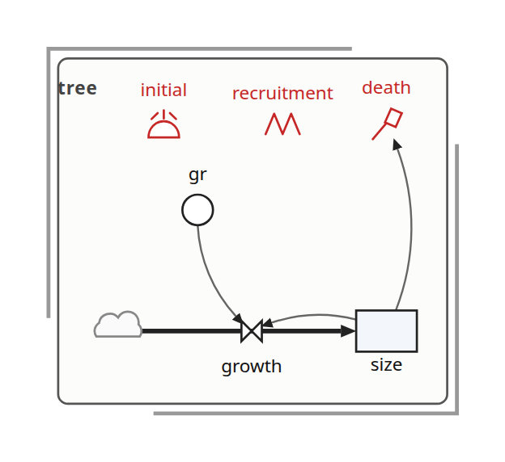
Step 11
Enter the expression size>17 for the symbol named death.
This states that a tree will “die” (be removed from the model) when its size exceeds 17.
Step 12
Set Execute for to 100, and run the model again with ▶. You have changed the model since it was loaded, so the run control loads it again first.
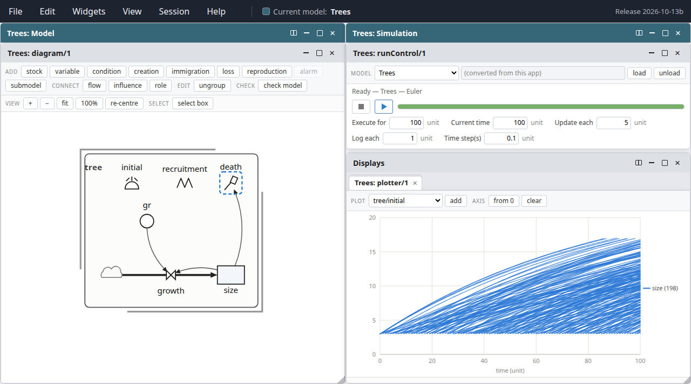
You should see multiple lines on the graph. Each line represents the growth of a single tree. Note that each line has a different slope, since each tree has a randomly different growth rate (as determined by the variable gr). Note also that each year two new trees are created, and that trees disappear when their size exceeds 17 — the fastest-growing ones reach it in about 85 years. The label at the end of the lines says how many trees there are.
Your plot from Stage 1 carried on working: size is now tree/size, a value for every tree, and the plotter draws a line for each. Point at the plot to see how many trees there were at that time, and the smallest and largest size among them.
Stage 3: Calculating aggregate information
Step 1
Add a variable outside the tree submodel, and name it total.
Step 2
Draw an influence arrow from the size stock inside the tree submodel to the variable total.
Your model diagram should now look like this:
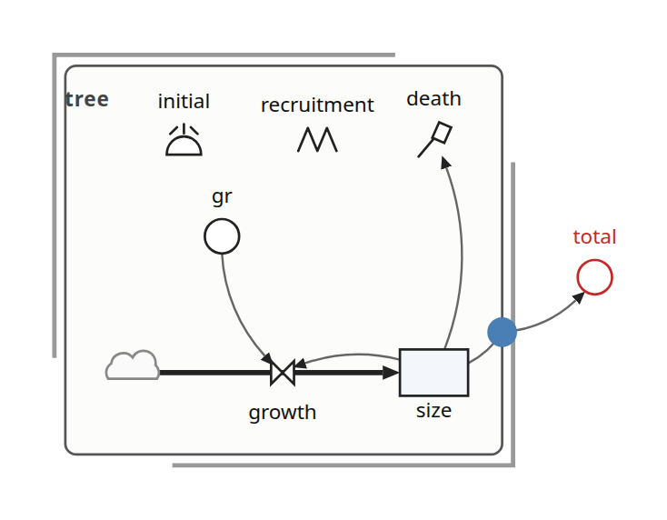
Notice how the influence arrow crosses the submodel boundary.
Step 3
Enter the expression sum({size}) for the variable total.
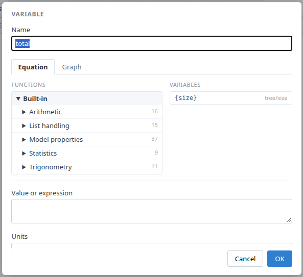
{size}: a list of sizes, one per tree.Be very careful to get the brackets right. The outer (round) brackets enclose the argument for the built-in function sum( ), which can find the total value of an array or a list. In this case, we want the sum( ) function to find the total value of a list of size values, one for each tree. It's a “list” rather than an “array” of values, because the number of trees (and hence the number of values to be summed) is not fixed, but changes over time. Simile uses braces {…} to denote a list, and square brackets […] to denote an array.
The dialog's Variables list shows the name in braces already, {size}, because it knows the arrow comes out of a population: clicking it puts in exactly what to type.
Step 4
Re-build the model: click load in the Simulation window. The plotter offers only what is in the model loaded, so this is what makes total available to plot.
Step 5
Call up a plotter for the variable total: Widgets › Plotter, choose total, and click add. To see both plots at once, click the Arrange contents button on the Displays titlebar and choose Tiled side by side.
Step 6
Set Execute for to 300, and run the model again.
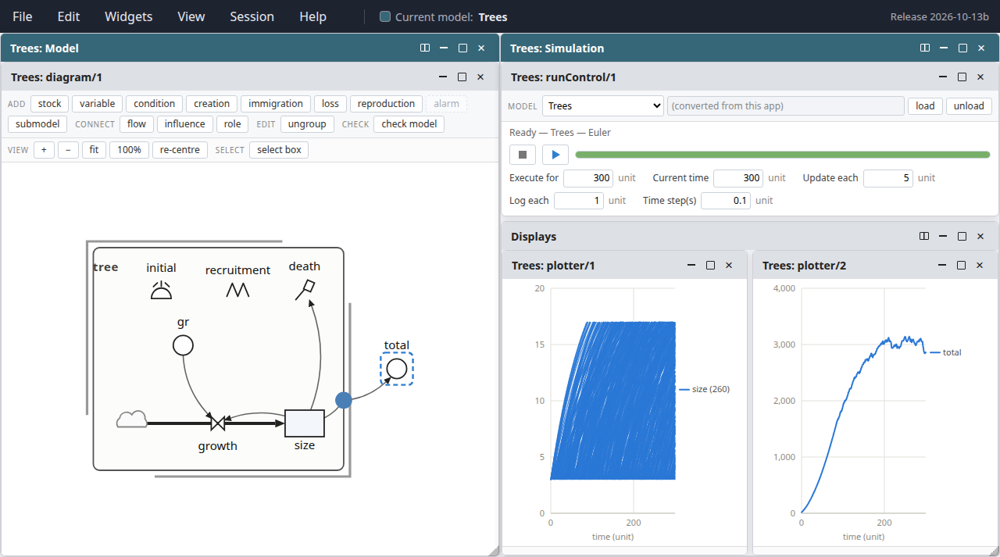
In addition to the plot for the growth of individual trees, you should see a graph with a single line for the total size of all the trees, rising smoothly, then bouncing around an asymptotic value. Why does it show this behaviour? First, trees are growing and more are being added, with none dying. Later, the growth of existing trees and the addition of new (small) ones is balanced by the sporadic death of big trees. The top of the curve is not smooth because the time it takes for a tree to die depends on its growth rate, which is randomly determined.
Your numbers will not be exactly those in the pictures: every run gives the trees new random growth rates.
Stage 4: Visualising the trees in space
Step 1
Add two variables inside the tree submodel, and name them x and y.
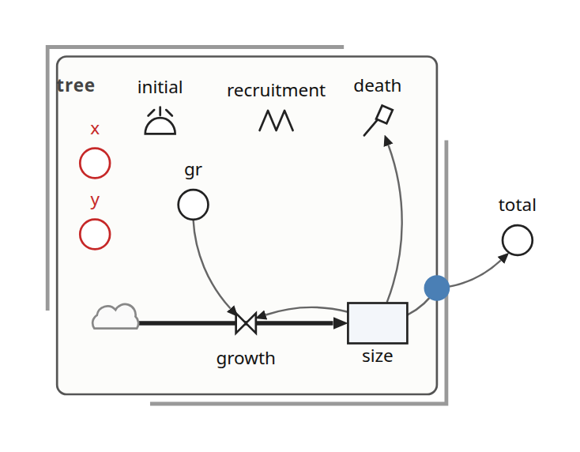
Step 2
Enter the following expression for the variable x: rand_const(0,50)
We imagine a 1 hectare plot, with the trees on the left-hand side: that is, their x-coordinate is between 0 and 50 m. The actual x-coordinate for each tree is randomly determined.
Step 3
Enter the following expression for the variable y: rand_const(0,100)
The trees can be anywhere between the front and the back of the 1 hectare plot. Hence, the y-coordinate for each tree is randomly determined between 0 and 100 m.
Step 4
Re-build the model: click load.
Step 5
Call up the lollipop display: Widgets › Lollipop diagram. It needs three variables, chosen in the three lists along its top: x, y and size. Because our variables are called x, y and size, it has chosen them already; in a model whose variables are named differently, you choose them yourself.
You should see a gridded area, with five lollipops on it, representing the five trees created at initialisation time. To give it more room, maximise the Simulation window with the □ button on its titlebar.
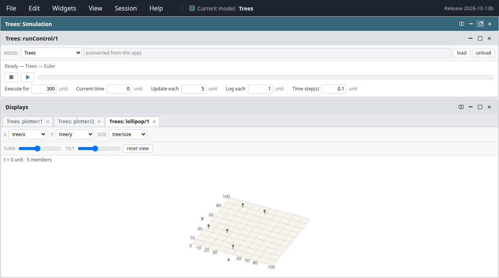
Step 6
Run the model again.
Now you can see the trees growing, new trees being created, and trees dying off when they reach the threshold height. Note that we have not changed the mathematical nature of the model. All we have done is to change the way we visualise its behaviour — but this has a dramatic effect on our appreciation of what's going on.
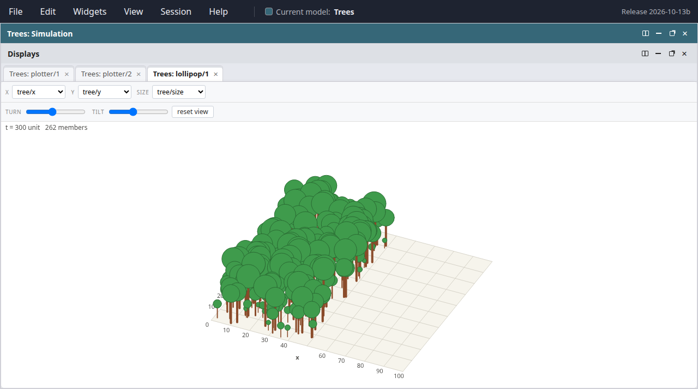
Each lollipop is one tree: it stands at the tree's x and y, and both its height and the size of its ball come from the tree's size. To look at the plot from another direction, use the turn and tilt sliders, or drag across the picture; reset view puts it back. Point at a tree to see its values.
That completes the tutorial.